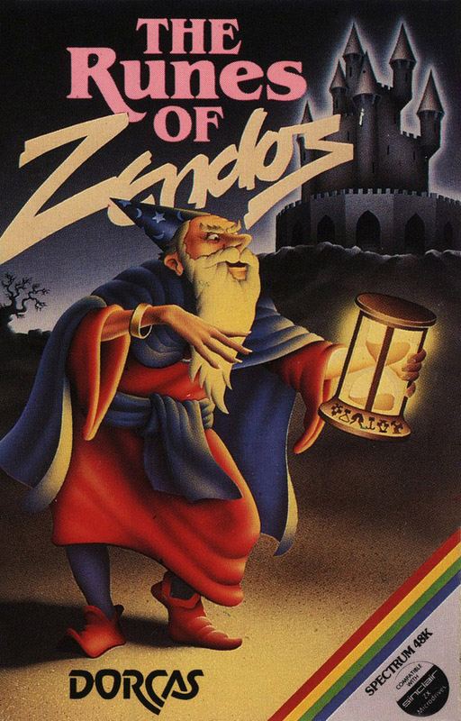
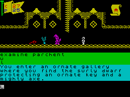
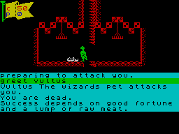

The Runes of Zendos


{kind=link}

| Publisher: | Dorcas Software |
| Price: | £7.95 |
| Year: | 1984 |
| Source: | CRASH, Issue 12 |

Dorcasia was a pleasant fertile land until the wizard Zendos cast the spell of darkness, plunging the country into perpetual gloom, forcing all the citizens of the tiny principality to pledge allegiance to him. A hero must take on the twelve different adventures and find and destroy the twelve runic hour glasses hidden deep within his magical castle, releasing the months and returning Dorcasia to the natural forces of the seasons. To protect the hour glasses and keep their runic inscriptions secret, Zendos has placed them in twelve separate rooms, each linked to an exterior gateway by a devious route. Each adventure has unique spells and problems to ensure a new challenge is provided on each occasion. The game features full animation, sentence input, sound effects and save game facilities to tape and microdrive.
When the game loads you are at the start of adventure one. At any time you can switch to the start of a different adventure by entering, for example, ‘adventure eight’. Status (or ?) gives information regarding the adventure you are in; e.g. Adventure 1, Strength 25, Provisions 25, Luck 10, Performance 80 (how much of the adventure you have completed). Further information regarding what you are carrying, the spells you know and what you are wearing is also detailed. You can wear one item on your head and one on your body; if you remove something you will then be carrying it. You begin each adventure with a supply of provisions eaten in quantities from 1–12 to increase your strength, e.g. EAT THREE items of food along the way replenishes strength depleted during fighting and running.

Vocabulary is surprisingly particular as you must type in the exact letters to make up the required words with only a few stock abbreviations for left (l), right (r), up (u), down (d), passage (p) and quickly (q). However, editing makes full use of the Spectrum cursor movement and delete functions which greatly facilitates entry. ENTER repeats the last command even after starting to type something else if this is first deleted. Input can be, and often must be, quite lengthy and involved, e.g. ATTACK THE GUARD WITH THE MIGHTY AXE and UNLOCK THE DOOR WITH THE GOLDEN KEY. The program will accept all words it has displayed.
Whenever you meet a creature its strength and yours are displayed in a pennant at the top left of the screen. If a creature is very strong you will need more than your bare hands. Fighting is seldom the only option; often befriending a creature or casting an appropriate spell marks the way forward. To cast a spell you must have found it first and which therefore will appear in your knowledge list in the current adventure. Using charms and lucky items may improve your luck.

The Runes of Zendos is a very graphically entertaining adventure with smooth, scrolling animation sending your character left and right through passageways, up and down steps of ladders and striking blows in battle with the various zombies, skeletons, werewolves and all manner of exotic assailants. Much of the language is atypical of the arcade-adventure scene with l and r keys chosen for movement and TAKE with no GET option. The problems are logical, more so than in many text adventures, and the game is certain to take some time to complete as three hours were needed for the first of twelve sections. Although the game stands up as an adventure in its own right it is the superb animation which will be the more immediate attraction of what is a very fine game.
COMMENTS
| Difficulty: | Quite easy |
| Graphics: | Scrolling graphics with character animation |
| Presentation: | Good |
| Input facility: | Allows sentences. Vocabulary small and a little unorthodox |
| Response: | Reasonable, scrolling graphics appear a bit slow when in a hurry |
| General rating: | Good, I liked it a lot. |
| Atmosphere: | 8 |
| Vocabulary: | 5 |
| Logic: | 8 |
| Debugging: | 10 |
| Overall value: | 8 |